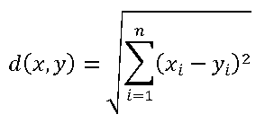
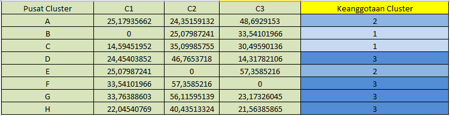
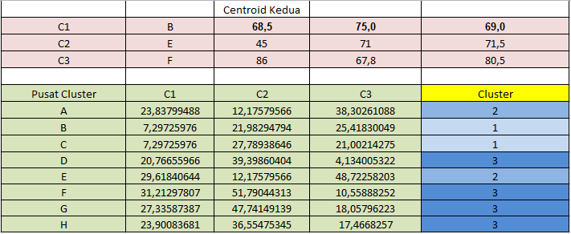

Teknik Data Mining : Algoritma K-Means Clustering¶
K-means clustering merupakan salah satu metode cluster analysis non hirarki yang berusaha untuk mempartisi objek yang ada kedalam satu atau lebih cluster atau kelompok objek berdasarkan karakteristiknya, sehingga objek yang mempunyai karakteristik yang sama dikelompokan dalam satu cluster yang sama dan objek yang mempunyai karakteristik yang berbeda dikelompokan kedalam cluster yang lain.
Menurut Daniel dan Eko, Langkah-langkah algoritma K-Means adalah sebagai berikut:
a. Pilih secara acak k buah data sebagai pusat cluster.
b. Jarak antara data dan pusat cluster dihitung menggunakan Euclidian Distance. Untuk menghitung jarak semua data ke setiap titik pusat cluster dapat menggunakan teori jarak Euclidean yang dirumuskan sebagai berikut:

dimana:
d(x,y) = Jarak objek antara objek x dan j
n = Dimensi data
Xi = nilai (angka) pada kolom yang dijadikan centorid
yi = nilai (angka) pada kolom yang akan diuji
c. Data ditempatkan dalam cluster yang terdekat, dihitung dari tengah cluster. d. Pusat cluster baru akan ditentukan bila semua data telah ditetapkan dalam cluster terdekat. e. Proses penentuan pusat cluster dan penempatan data dalam cluster diulangi sampai nilai centroid tidak berubah lagi. Berikut ini adalah contoh penerapan algoritma K-Means :

Pertama kita tentukan centroidnya, yaitu baris B, E, F. Kemudian kita hitung jarak dari setiap data terhadap centroidnya. Dan diperoleh hasil seperti dibawah ini.

Kemudian kita tentukan centroid baru dengan cara mengitung rata-rata dari data-data pada setiap cluster.


Selanjutnya kita lakukan iterasi clustering kedua untuk melihat apakah data-data ada yang berpindah cluster

Setelah dilakukan perhitungan clustering kedua, ternyata cluster dari data-data masih tetap seperti perhitungan clustering pertama. Jadi perhitungan clustering berhenti.
Daftar Pustaka¶
[1.]Baradwaj, B. K. and Pal, S. (2011). “Mining Educational Data to Analyze Student’s Performance.” International Journal of Advanced Computer Science and Applications. 2. 64.
[2.] Begum, S. H. (2013). “Data Mining Tools and Trends - An Overview.” International Journal of Emerging Research in Management & Technology. 2278-9359. 6.
[3.] Daniel Riano Kaparang dan Eko Sediyono. (2013). “Penentuan Alih Fungsi Lahan Marginal Menjadi Lahan Pangan Berbasis Algoritma K-means di Wilayah Kabupaten Boyolali.” JdC. 2. 20.
[4.] Deka Dwinavinta Candra Nugraha, Zumrotun Naimah, Makhfuzi Fahmi dan Novi Setiani. (2014). “Klasterisasi Judul Buku dengan Menggunakan Metode K-Means.” Seminar Nasional Aplikasi Teknologi Informasi. ISSN: 1907-5022. G-2.
[5.] Ediyanto, Muhlasah Novitasari Mara dan Neva Satyahadewi. (2013). “Pengklasifikasian Karakteristik dengan Metode K-means Cluster Analysis.” Buletin Ilmiah Mat. Stat. dan Terapannya (Bilmaster). 2. 134.
[6.] Johan Oscar Ong. (2013). “Implementasi Algoritma K-means Clustering untuk Menentukan Strategi Marketing President University.” Jurnal Ilmiah Teknik Industri. 12. 13-20.
[7.] Mujib Ridwan, Hadi Suyono dan M. Sarosa. (2013). “Penerapan Data Mining untuk Evaluasi Kinerja Akademik Mahasiswa Menggunakan Algoritma Naive Bayes Classifier.” Jurnal EECCIS. 7. 60-61.
[8.] Oyelade, O. J., Oladipupo, O. O. and Obagbuwa, I. C. (2010). “Application of K-Means Clustering algorithm for Prediction of Student’s Academic Performance.” International Journal of Computer Science and Information Scurity. 7. 292.
[9.] Seddawy, A. B. E., Khedr, A. and Sultan, T. (2012). “Adapted Framework for Data Mining Technique to Improve Decision Support System in an Uncertain Situation.” International Journal of Data Mining & Kenowledge Management Process. 2. 5.
[10.] Sudirman dan Nur Ani. (2012). “Implementasi Teknik Data Mining Dengan Algoritma Kmeans Clustering dan Fungsi Kernel Polynominal untuk Klasterisasi Objek Data.” Prosiding Seminar Nasional Efisiensi Energi untuk Peningkatan Daya Saing Industri Manufaktur & Otomotif Nasional. B - 50.
[11.] Yedla, M., Pathakota, S. R. and Srinivasa, T. M. (2010). “Enhancing K-means Clustering Algorithm with Improved Initial Center.” International Journal of Computer Science and Information Technologies. 1. 121.